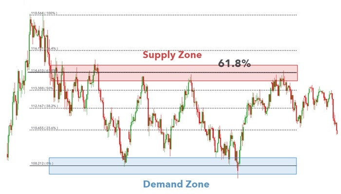
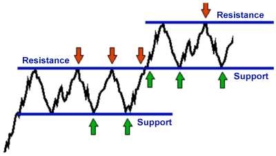
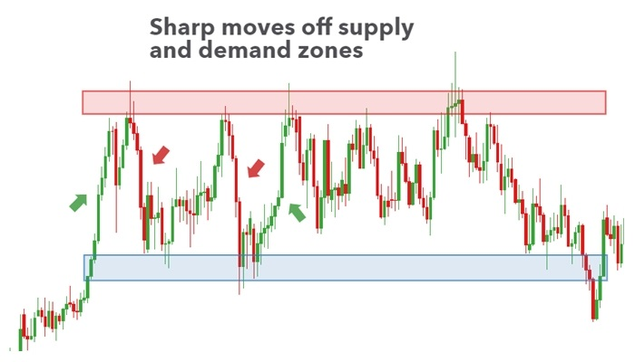
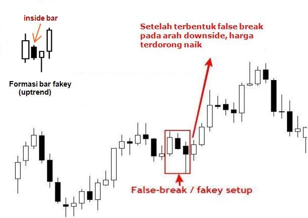

📌 5 Materi Teknikal Analisis Forex
Dipublikasikan: 25 September 2025
1. Dasar Supply & Demand

Supply Zone: area di mana seller dominan → potensi harga turun.
Demand Zone: area di mana buyer dominan → potensi harga naik.
- Ciri zona kuat: pergerakan harga tajam & meninggalkan area dengan cepat.
2. Identifikasi Support & Resistance (SnR)

Support: level “lantai” harga yang sering memantul naik.
Resistance: level “plafon” harga yang sering memantul turun.
- Semakin sering harga menyentuh SnR → semakin valid level tersebut.
- Gunakan time frame besar (H4, Daily) untuk menentukan level utama.
3. Kombinasi Supply-Demand dengan SnR

Supply/Demand: area dinamis.
Support/Resistance: level statis.
- Jika Supply bertepatan dengan Resistance → zona makin kuat.
- Jika Demand bertepatan dengan Support → peluang mantul makin tinggi.
4. Price Action Konfirmasi Entry
Jangan entry hanya karena harga menyentuh zona. Tunggu konfirmasi candlestick:
- Pin Bar: ekor panjang, tanda penolakan harga.
- Engulfing: candlestick besar menelan sebelumnya → sinyal kuat.
- Break of Structure (BoS): untuk validasi arah tren.
5. Manajemen Trading di Supply & Demand
- Entry: dekat dengan zona (bukan di tengah).
- Stop Loss: sedikit di luar zona Supply/Demand (agar aman dari fakeout).
- Take Profit: targetkan ke zona berlawanan atau level SnR terdekat.
- Gunakan Risk:Reward minimal 1:2 supaya trading lebih konsisten.
🔥 Intinya
- Zona Supply/Demand: area keputusan besar.
- SnR: konfirmasi tambahan.
- Price Action: sinyal masuk.
- Money Management: kunci profit jangka panjang.